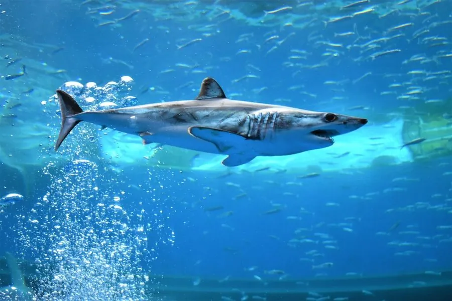

鱼类 · 动物界
灰鲭鲨 Isurus oxyrinchus

海洋中游速最快的鲨鱼之一，体形流线、尾鳍呈新月形，能跃出水面，因鱼翅贸易和兼捕被列为濒危。
- 分类
- 门脊索动物门纲软骨鱼纲目鼠鲨目科鼠鲨科属鲭鲨属
- 栖息环境
- 热带、亚热带和温带的远洋上层水域，有时靠近近岸
- 地理分布
- 全球温带和热带海洋，包括太平洋、大西洋和印度洋
- 保护级别
- IUCN 濒危（EN）；《濒危野生动植物种国际贸易公约》附录Ⅱ
物种志
灰鲭鲨体呈完美的流线型，吻部尖锥状，尾鳍呈新月形，胸鳍狭长。体色背部深蓝或蓝灰，腹部白色，背腹交界处有明显的分界。成鱼体长一般 2–3 m，最大记录超过 4 m，体重 100–300 kg；雌鱼通常比雄鱼大。它的牙齿细长而尖锐，适合咬住光滑的猎物。
灰鲭鲨分布于全球温带和热带海洋，多在大洋上层活动，有时靠近近岸。它是积极的追猎者，捕食鲭鱼、金枪鱼、剑鱼等硬骨鱼以及头足类，游速可达每小时 50 km 以上，能跃出水面数米。灰鲭鲨为卵胎生，每胎 4–10 尾，妊娠期约 15–18 个月。由于鱼翅贸易、游钓和渔业兼捕，其种群持续下降，IUCN 将其列为濒危，并已列入《濒危野生动植物种国际贸易公约》附录Ⅱ。
形态与习性
- 食性鲭鱼、金枪鱼、剑鱼等硬骨鱼及头足类
- 体长一般 2–3 m，最大记录超过 4 m
- 体重一般 100–300 kg
- 速度短距离冲刺可达每小时 50 km 以上
- 繁殖卵胎生，每胎 4–10 尾，妊娠期约 15–18 个月
- 习性独居或小群活动，会跃出水面
趣味知识
- 灰鲭鲨是游速最快的鲨鱼之一，短距离冲刺可达每小时 50 km 以上。
- 它能跃出水面数米高，落水时发出巨大的声响。
- 灰鲭鲨的牙齿细长尖锐，即使猎物表面光滑也不易挣脱。